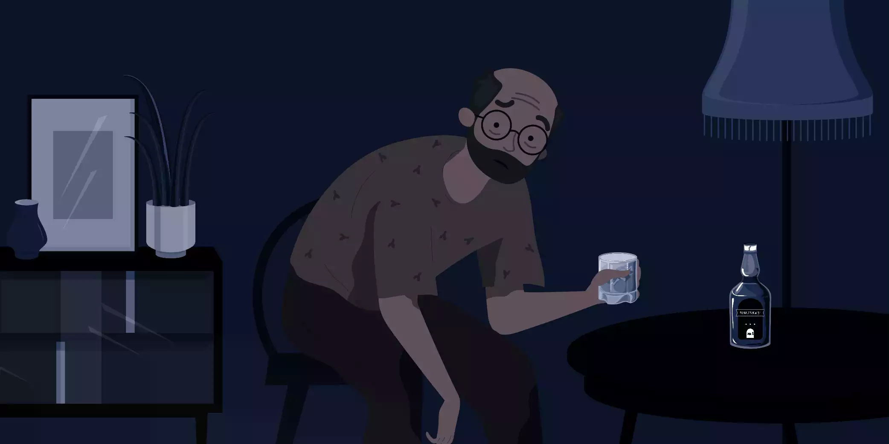
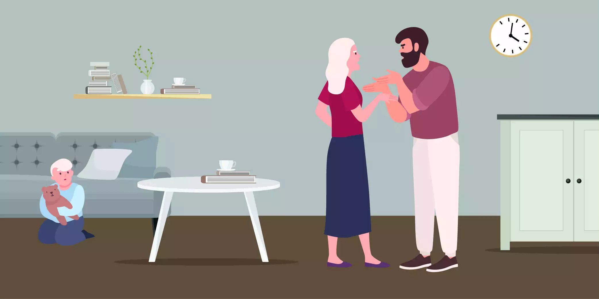

Get to know more about our Depression Treatment in Australia

What is depression?
Depression is a common mental health condition with a high burden of disease. Research suggests that 1 in 7 Australians will experience depression at some point in their life. Certainly, depression is a large contributor to death and disability worldwide; it associates with high rates of lost productivity, economic loss and reduced quality of life. Depression affects how we think, feel, and act, including how we relate to others. In addition, it can impact every aspect of life, including our functioning at work or in relationships.
People experiencing depression can have a wide range of symptoms, including:
- Persistent low mood and pessimism
- Loss of interest and enjoyment in most activities
- Changes in sleep, appetite and weight
- Low energy levels and physical symptoms (e.g. headache, stomach upset)
- Irritability/agitation or a slowing down of thought and physical movement
- Feelings of guilt or worthlessness
- Poor concentration
- In severe cases, thoughts of death and psychotic symptoms
Depression can at times be a mild condition, however, it can also be severe and incredibly debilitating. Many people with depression withdraw from close family and friends, stop going out and cease engaging in the activities that used to give them pleasure and meaning in life. On the other hand, some people may turn to harmful ways of coping, such as the use of drugs and alcohol or self-harm, which work to further lower mood and maintain depression.
However, there is no simple test for depression. Rather, identifying depression usually involves a detailed assessment with a qualified health professional, such as a psychologist or psychiatrist. The clinician you choose to work with will ask a series of questions about your history, current difficulties, and the impact of these difficulties on various aspects of your life.
How to Get Help?
Our highly trained psychologists and psychiatrists work with clients to identify, understand and treat their depression. Most importantly, the aim of treatment for depression is to reduce the person’s symptoms, support them to return to their normal level of functioning, and ultimately, improve their quality of life. However, the good news is that effective interventions exist to treat depression. The sooner a person with depression accesses support, the sooner their road to recovery begins.
What are some of the causes of depression?
Depression is a complex condition. The causes of depression are not fully understood, but likely include an interaction between things like genetics, personality, early experiences, stressful life events, physical illness and substance use. A person may have an increased genetic or biological vulnerability to depression, which may then interact with certain life events or ‘stressors’ to cause the condition.

Factors that trigger the onset of depression differ greatly between individuals, but some common examples include:
- Traumatic events, including grief and loss
- Bullying and interpersonal conflict
- Physical illness, injury or other health problems
- Unemployment and financial hardship
- Work and educational stress
- Poor lifestyle, including a lack of exercise, poor diet and poor sleep
- The use of certain medications, drugs and alcohol
Protective factors – things like coping skills, social support and a person’s involvement in meaningful activities – can also impact whether or not they develop depression in response to any of the above triggers. So, our team of experienced psychologists and psychiatrists can work with you to understand and treat your depression and reduce your risk of relapse.
Conditions and experiences related to depression
Depression can occur in certain contexts and often exists in the presence of other mental and physical health problems. Some examples of this are:
Sadness
Sadness is a natural human emotion, which we all feel at times in response to the upset and pain that inevitably occurs in life. However, this is different from depression. Like all emotions, sadness is temporary and will reduce over time. Depression, on the other hand, is a mental illness that will often persist and negatively impact areas of life in the absence of treatment.
Grief
Grief is a natural response to loss, which can affect your physical and mental health. It is an individual process that presents differently for different people. Whilst depression and grief are separate conditions, the two can sometimes co-occur.
Postnatal depression
Postnatal depression is a type of depression that occurs after childbirth. Along with usual depressive symptoms, people with postnatal depression often have difficulty bonding with the newborn baby. So, there may be more of a hormonal element to this condition that occurs within the context of pregnancy.
The bipolar affective disorder
The bipolar affective disorder is another type of mood disorder. This includes periods of elevated mood (mania), along with periods of depression. Periods of ‘normal’ mood can occur between manic and depressive episodes. However, treatment for bipolar disorder can be quite different from treatment for depression. So it is important to understand your symptoms and get your diagnosis right.
Seasonal patterns of depression
Seasonal patterns of depression can sometimes occur, whereby the depressive symptoms appear to be triggered by seasonal factors. People with this pattern of depression often feel depressed during the autumn and winter months, and tend to feel better during the spring and summer months.
Premenstrual dysphoric disorder (PMDD)
Premenstrual dysphoric disorder (PMDD) is a condition some women experience, whereby they experience depressive-like symptoms in the week or two before and days following their menstrual period. Symptoms can be intense and highly debilitating.
Anxiety, trauma-related and substance use disorders
Anxiety, trauma-related and substance use disorders are other types of mental disorders, which can commonly co-occur alongside depression. Around 60% of people with depression experience an anxiety disorder and vice versa. Substance use may cause the onset of depression, or may be used as a way of coping with pre-existing depressive symptoms. But, it is not uncommon for people to develop symptoms of depression following the experience of a traumatic event or events.
Personality disorders
Certainly, personality disorders are a group of more longstanding mental health conditions, which are also commonly associated with depression and depressive symptoms.
Is there a depression test?
A person’s GP, psychologist or psychiatrist usually diagnose this. The diagnosis of depression is based on the presence and severity of certain symptoms. These are outlined by pre-existing diagnostic criteria. On the other hand, there is no physical test for depression per se, but your doctor may ask you to have a blood test or scan to rule out other causes for your symptoms. One other possible causes are excluded, your GP or mental health professional may consider a diagnosis of depression. That is to say, they will ask you questions about your history, current symptoms and the impact of these symptoms. They may also ask you to complete some questionnaires as part of the assessment process. In some cases, it may be best to wait and see how things go over time before making a diagnosis of depression. If you are struggling, treatments such as psychotherapy can still be beneficial and sought without a formal diagnosis.
What are the available depression treatments?
Work collaboratively
To clarify, there are many effective treatments for depression. Your clinician will discuss treatment options with you to ensure you are aware of what is available and the potential costs/benefits of each option. They will want to know about the symptoms you are experiencing and how they impact your daily life.
Your clinician and/or care team will also be interested to know what else is happening in your life, whether you have tried the treatment for depression in the past, your personal preferences and any other health problems you may have. Your clinician will work with you to collaboratively form a treatment plan that best suits your needs.
Below, we have listed the typical treatments for depression, depending on the severity of the symptoms:
- Mild depression is usually treated with lifestyle changes and psychological therapy. Medication, which carries with it the risk of side effects, is generally not indicated in these cases
- Moderate depression can usually be treated with psychological therapy or medication
- Severe depression may require a combination of psychological techniques and medication. In severe cases, where symptoms don’t get better in response to usual treatment, more invasive therapies might be offered. These options include things like Electroconvulsive Therapy (ECT) and Transcranial Magnetic Stimulation (TMS).
As above, we use psychological techniques or talk therapies to treat depression. One of the most effective therapies for depression is Cognitive Behavioural Therapy or CBT. Certainly, this type of therapy is often provided by a psychologist. CBT works by teaching people how to recognise unhelpful thoughts that are currently keeping them feeling down.
As their name suggests, antidepressant medications are commonly prescribed to treat symptoms of depression. There are several different types of antidepressants, each with a different profile of potential side effects. Your doctor will be familiar with prescribing antidepressants and will work with you to find the right fit. It is important to speak with your GP or psychiatrist about medication side effects. However, continue working with them to monitor your response.
Regardless of the intervention, the broad aim of treatment for depression is to
- Reduce symptoms
- Gradually return to living a healthy and fulfilling life
- Finally, with input from your mental health clinician, you will work to implement strategies to prevent depressive symptoms from coming back in the future.
You can see an online psychiatrist or psychologist at Epsychiatry about your depression. We encourage you to seek a referral from your GP and give us a call to book an appointment.